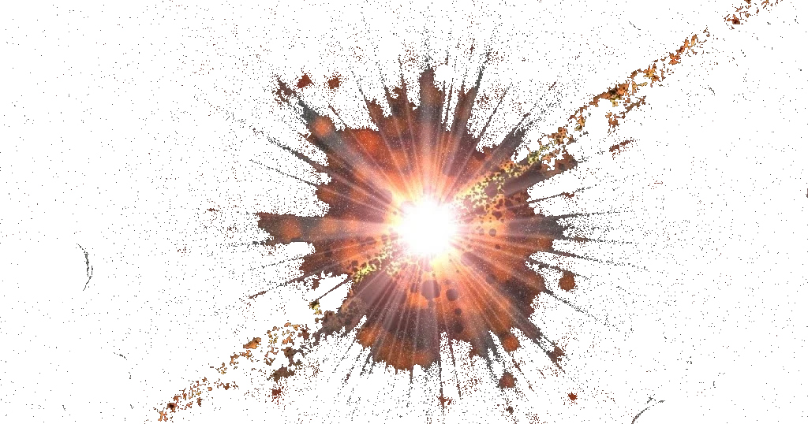
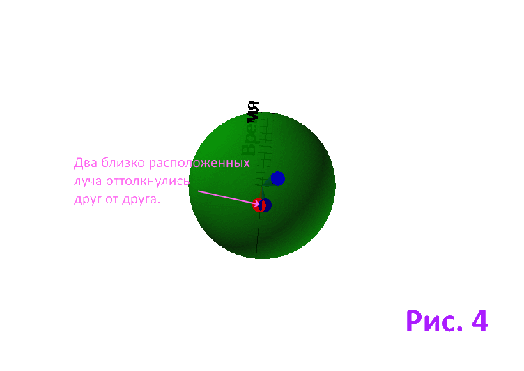
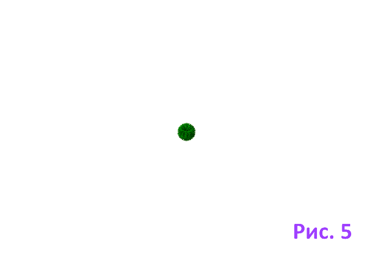
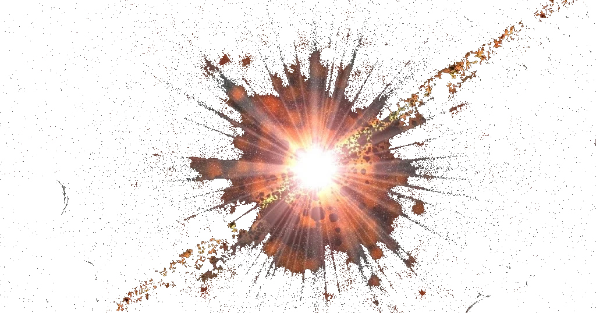
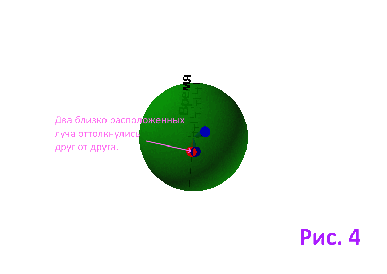
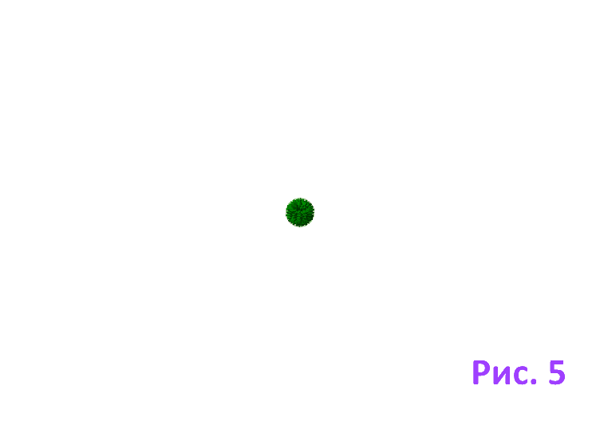

|
В виду того, что статья больше ориентирована на обыкновенного читателя, ввожу эту главу, где всё будет объясняться простыми словами, без научных терминов. Я сам простой работяга, на данный момент пенсионер, по этому прекрасно осведомлён, что ввиду ненадобности люди забывают основы любых школьных знаний, если они не используются в жизни. По этому начну с маленького напоминания азов физики. Знающим современную физическую картину мира можо пропустить этот текст, перейдя по этой ссылке. По скольку оснавная тема статьи - образование вещества, вспомним, из чего же состоит окружающий мир. Всё что мы видим вокруг состоит из молекул, молекулы состоят из атомов. Атомы в свою очередь из элементарных частиц, протонов, нейтронов и электронов. Это надёжно известно современной науке и хорошо удовлетворяет логическую схему построения Мира - от простого к сложному. Ведь действительно, из трёх основных компонентов - протона, нейтрона и электрона, созданы сотни атомов (периодическая система Менделеева). Из атомов - миллионы разнообразных молекул, из которых состоит всё существующее. Но дальше схема перестаёт работать. В поисках причин равенства заряда протона и электрона предполагается, что все частицы состоят из кварков, но убедительно надёжного подтверждения этому до сих пор нет. Это ещё на уровне теоретической гипотезы, пусть и принимаемой большинством научного мира. И вот с кварками мы уже выбиваемся из схемы "от простого к сложному". Кварков уже шесть, при чём каждый может иметь один из трёх "цветов". "Цвет" - это одно из свойств каждого из типов кварков. Шесть типов по три в каждом уже восемьнадцать. Для их связей требуются глюоны, что ещё больше увеличивает число исходных компонентов. К тому же искуственно удаётся создать множество других элементарных частиц, не участвующих в построении реальных веществ. Явно запутался научный мир. И не удивительно, ведь речь идёт о на столько малых объектах, которые не возможно видеть ни через какие современные устройства. Так же проблема времени. По сегодняшний день мы не знаем, куда его пристроить. По этому вводим дополнительные измерения, усложняем математику. Но ведь мир должен развиваться от простого к сложному, а не на оборот, так гласит философия. Когда мы принимаем время как дополнительное измерение возникает вопрос, почему оно течёт только в одном направлении и с постоянной скоростью? Почему, как в других измерениях, нельзя повернуть назад, исправить косяки, и вернуться обратно? Вроде бы формулы из теории относительности это позволяют, но на самом деле это только в фантастических фильмах. Но всё же построение Мира по схеме "от простого к сложному" возможно. И со временем вопрос не такой уж сложный, просто нужно поставить всё на свои места. Ведь время - это не атрибут пространства, это атрибут какого либо процесса. Все процессы, происходящие вокруг нас, с нашим участием, нами производимые, происходят в течении определённого времени. Это не требует доказательств. В таком случае, думаю, что не должно требовать доказательства и то, вся Вселенная в своём современном развитии тоже процесс. И этот процесс, не смотря на бесконечное множество объектов, можно предствить одним, общим процессом. Процесс, происхотящий в времени и пространстве. Время и пространство разные понятия. Тогда предположим, что за всеобщим, всеобъемлющим процессом развития Вселенной стоит один простейший процесс. Нам прекрасно известно, что в вакууме возникают и движутся волны. Лучшего и не нужно. Вот он, простейший процесс, который происходит в вакуууме, абсолютной пустоте. Время у процесса уже присутствует, детали этого явления рассмотрим несколько позднее. А теперь попытаемся понять, как же появилась материя. Пытаясь понять супер современную "теорию струн" в физике, я перебирал различные формулы и константы. И совершенно случайно наткнулся на простую комбинацию, позволяющую простой волне формировать элементарную частицу. В физике эта комбинация давно известна, но ей никто не придал значения. Этому просто не было и нет оснований, до сих пор никому в голову не приходит, что волна может образовать частицу. Но мне удалось найти логическое обоснование этому, подробнее можно прочитать здесь и здесь . А ведь такая схема, где волна формирует любую частицу должна быть довольно простой. А если ещё любые силы и взаимодействия будут производиться теми же волнами, то для построения Мироздания достаточно только пространства, которое поддерживает их существование. Но судить гипотезу по первому её фрагменту рано. Лично я завис на ней, и пытался довести до логического конца по той причине, что довольно быстро появляется понимание того, что всё это гармонично вливается как в традиционную Ньютонову физику, так и в теорию относительности. И квантовая физика раскладываеся, как простенький пасьянс. Да, проблем на этом пути возникает не мало, и самая большая - это наше восприятие. Для полного понимания одного фрагмента не достаточно, нужно охватить как можно более и обратить внимание как раз на этот момент, как всё взаимно вяжется. Начнём с пространства. По большому счёту окружащее нас пространство состоит из двух компонентов - пустоты (вакуум) и материи (всё твёрдое, жидкое и газообразное). И хотя вокруг себя мы видим в основном материю, стоит вспомнить хотя бы только о космических расстояниях, и становиться ясно, подавляющее количество объёма всего пространства занимает пустота (вакуум). В вакууме радиоволны распостраняются беспрепятсвенно, это нам доподлинно известно. Значит та волна, о которой мы будем говорить, тоже должна свободно распостраняться. И она с родни электромагнитным волнам, в одинаковой среде - одинаковые волны. Про волны говорить труднее, о них хорошо знают только специалисты, и те каждый по своей специфике. Ведь есть радиоволны, сейсмические волны, просто волны на воде, в конце концов. И про каждые волны своя наука. Но есть одно общее для любых волн. Волны - это колебания. Колебания элементов, из которых состоит среда. Для воды это молекулы воды. И мы видим шторм в море, или круги от капли дождя в луже, это всё колебания молекул воды. Ну а наши, электормагнитные волны, это колебания чего? Сейчас я поставлю читателей в тупик, и каждый будет выбираться из него сам. Кто поймёт этот момент - поймёт и суть всей гипотезы. Получается, что электромагнитные волны - это колебания неких элементов пустоты, раз она распостраняется в пустоте. То есть пустота не такая уж и пустая, хоть и нет там ничего. А теперь, если всё сущее состоит из двух составляющих, пустоты и материи, то что мы увидим, если вдруг разорвём пустоту? Поняли, куда я Вас завёл? То есть материя, элементарные частицы - это разрывы пустоты. Логически выходит так. И те же радиоволны могут иметь препятствием только вещество, но не вакуум. Я знаю, что большинство в это не поверит, не смотря на логику, но я всё же продолжу. Рождение вещества - это только наживка, кто попался на этот крючёк, сейчас узнает более удивительное свойство нашей волны. Вернёмся к пространству, оно для нас трёхмерное, это просто очевидно, повертим головой - и всё понятно. А как же тогда пространтво-время, ведь под него пишется множество теорий? И действительно, ведь нельзя указать место расположения, например, паровоза. Ведь он переедет через минуту, и всё, потерян. Но опять подключим логику, ведь теперь нас читают только те, кто ею владеет. Остальные посчитали статью бредом, и отсеялись. Атрибуты пространства - это его ординаты в системе координат, длина, ширина и высота. А время - атрибут какого либо процесса, но не пространства. Когда паровоз переехал на другое место (процесс движения с атрибутами скорость и время, в итоге расстояние) координаты его станут ... По этому не следует смешивать размерность пространства и время. А вот если в пространстве появилась волна, значит начался процесс. И он сопровождается временем, ведь волна движется с какой то скоростью, а как скорость может быть без времени. Пройденный волной между двумя колебаниями путь будет косвенно отождествлять собой время. Вот у нас и время появилось, и не надо измерений в пространство добавлять. Начался процесс, и начался отсчёт его времени. И этот процесс мы можем привязать к современным знаниям. Пусть это будет Большой взрыв. Не следует воспринимать слово "взрыв" буквально, это посто внезапное начало некого процесса. До него Вселенной не существует. Выходит, что и времени то же. Да и какой смысл во времени если нет ничего и ничего не происходит. За тем какой то изначальный толчок создаёт колебания в вакууме, то есть волну. Я называю её "Волной времени", потому, что она формирует время. И не только время. Как нам известно из выше сказанного, она создаёт ещё и вещество. Что же это за волна такая дивная? Да, можно её и дивной назвать. Если рассматривать весь этот процесс целиком, то в его составе можно увидеть, пожалуй, весь сонм известных нашей науке волн. В динамике его я попытался представить как на рис. 4. Общий процесс можно отнести к сферической волне. Это как раз есть увеличивающеяся сфера на рисунке. Линейка с делениями - радиус сферы, каждое деление обозначает один цикл волны. Это и будет минимальный цикл, обозначающий для нас минимальную метку времени. Каждый цикл волны, каждое колебание нами воспринимается как единица времени. Для нас нормальная его длительность - 8,0977075365*10-21 секунды. Из них складываются и секунды и миллиарды лет. Каждое текущее колебание - это для нас настоящее. И этот текущий момент образует на волне поверхность. На рисунке это внешняя оболочка сферы. Можно сравнить с футбольным мячиком. Его кожаная оболочка и будет поверхностью. Вот эта поверхность и является той плоскостью, на которой происходят все текущие события. Сталкиваются галактики и распадаются атомы. Вспомните, физики постоянно утверждают, что видят наш мир на плоскости. Вот это он и есть. Только плоскость не совсем плоскоская, но ведь нам не привыкать. Поверхность Земли такая же круглая, а мы даже не замечаем. Так вот, каждый новый цикл рождает новую поверхность, это видно из рисунка. Каждая текущая поверхность - это вся наша Вселенная на плоскости в текущий момент времени. Но сферическая волна в свою очередь состоит из бесчисленного множества лучей. Как лучи от Солнца. Они исходят из центра, от места первичного толчка. Это тоже волны, из них в сумме состоит сферичекая волна, а по раздельности они представляют собой Р-волны (первичные волны). В результате процессов от этих волн обрауются разрывы на на нашей поверхности. Об этом мы писали выше. Эти разрывы и есть вещество, элементарные частицы. То есть на плоскости рождается полная картина нашего Мира в данный момент времени. При каждом новом цикле Мир рождается по новому, но все элементы остаются на прежних местах, но на новой плоскости. Потому, что каждый из элементов нашего Мира формируется группой лучей. А они движутся прямо, и отображаются на том же месте в новой плоскости, только в чуть большем масштабе. Как одиночная точка на рис. 4. А вот рядом два луча, которые оттолкнулись друг от друга в какой то момент времени. Они изменили углы своего направления движения, и по этому движуться под некоторым углом к поверхности. И в связи с этим вынуждены удаляться друг от друга на каждой новой поверхности, в каждый новый момент времени. Соответственно углу наклона к поверхности. Это не что иное, как прямолинейное движение по инерции. Ни где в физике нет ему логического объяснения. И вот мы нашли его корни. Так же на поверхности лежит ответ на вопрос о расширении Вселенной. В прямом смысле на поверхности, ведь вместе с увеличением сферы растёт и площадь её поверхности. А увеличение поверхности - это увеличение размеров Вселенной. В итоге галактики разлетаются, и виной тому не тёмная материя, а простой ход времени. В итоге получилось, что природа построила Мир в точности как в кино. В каждый момент действительности строится один кадр. Но это происходит на плоскости, а в реальности мы видим объёмный Мир. Как это происходит описано здесь . Ну и для полной картины в этой главе не хватает взаимодействий, то есть по просту сил, таких, как сила тяжести и другие. Они описаны в соответствующих главах. Там описание чуть посложнее. И все взаимодействия - результат работы волны, и решаются так же просто, как и всё остальное. А ведь современная физика ещё не знает принципа работы ни одной из сил. Всё это можно прочитать, перейдя через "Оглавление" к другим главам статьи. |

 





{kind=link}
{kind=link}
{kind=link}
| Назад. Оглавление |
Следующая страница. Общая схема. |